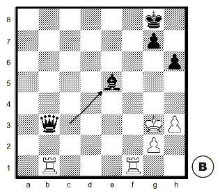

Hay jaque doble cuando la pieza que se mueve para permitir el jaque al descubierto, mueve a una casilla desde la que también da jaque.
La única respuesta al jaque doble es mover el Rey, porque no se pueden tapar o comer las dos piezas contrarias que dan jaque al mismo tiempo.
Ejemplo:
Al mover el Alfil de c3 a e5 se produce jaque doble: con la Dama (al descubierto) y con el Alfil.
Las blancas tienen que mover el Rey. No pueden comer la Dama porque siguen en jaque con el Alfil. Tampoco pueden tapar los dos jaques a la vez.